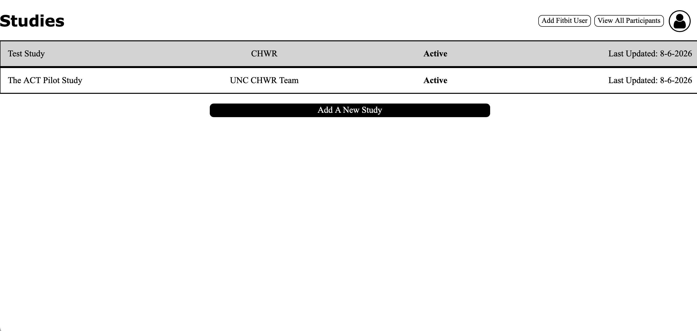

Jamie Duncan, BA
Human Factors & Applied Cognition PhD Student
George Mason University, Fairfax VA
About Me
I'm a first-year Human Factors & Applied Cognition Ph.D. student at George Mason University. Under the guidance of Dr. Yi-Ching Lee I'm conducting research on automated driving and transportation safety. My previous research experience includes usability testing within both the technology and public health domains, as well as explainable AI (XAI) for automated vehicles. As both a developer and user of technology, I understand the importance of research that supports strong product design. I'm excited to add to this body of research, influencing safe and supportive design for all.
My research interests include:
- Teen Drivers of Automated Vehicles
- Driving Research with fNIRS
- Explainable AI (XAI) for Automated Vehicles
Education
- PhD in Human Factors Psychology, Enrolled (George Mason University)
- BA in Computer Science and Psychology, 2025 (Hamilton College)
Experience
Graduate Research Assistant - George Mason University (Fairfax, VA)
August 2026 - Present
- Implementing traffic sign guidelines from the Manual on Uniform Traffic Control Devices (MUTCD) into graphical changeable message signs (CMS); evaluating driver experiences with the new signs
- Learning to develop traffic scenarios for driving simulators using Unreal Engine
Graduate Teaching Assistant - George Mason University (Fairfax, VA)
August 2026 - Present
- Support student learning in a research methods for psychology course by providing engaging assignments, office hours for questions or discussion, and actionable feedback

Social/Clinical Research Assistant - UNC Chapel Hill (Chapel Hill, NC)
September 2025 - August 2026
- Improved participant recruitment across three different studies by identifying new participant outreach methods; designed engaging activities to get children and their families interested in scientific research
- Facilitated protocol testing the feasibility of using sensor technology in research with young children
- Enabled a nutrition tracking pilot study by designing and building an automated calorie tracking application. The application photos shown contain my own health data that was gathered for application testing only, it was not part of the study.



Senior Thesis - Hamilton College Psychology Department (Clinton, NY)
January 2025 - May 2025
- Independently conducted a literature review of the moral foreign language effect; developed a hypothesis based on gaps in literature
- Navigated the research process from beginning to end, including gaining IRB approval, creating materials in Qualtrics, and analyzing the data in SPSS
- Communicated my findings to the Hamilton College community through a 23 page research paper and ten-minute thesis presentation

Usability Research Assistant - Hamilton College Computer Science Department (Clinton, NY)
January 2025 - May 2025
- Enabled user testing of a Google Driver extension by designing Qualtrics questionnaires, diary study protocol, and post-study interviews for pilot participants; trained students new to human-subjects research
- Organized our research team during pilot testing by building shift schedules and maintaining the participant scheduling system
Senior Project - Hamilton College Computer Science Department (Clinton, NY)
August 2024 - December 2024
- Designed and built a grant management application using information from client meetings along with research on form design in HTML, email APIs and database integration; independently learned JavaScript and Node.js
- Ensured the final product fit out client’s specifications by regularly interfacing with them; presented application design and progress to thesis seminar

Human Factors Research Assistant with National Science Foundation Research Experience for Undergraduates Program (NSF-REU) - Rice University (Houston, TX)
June 2024-July 2024
- Collaborated with a faculty mentor and graduate student in their lab for 8 weeks on a project developingan explainable AI model for automated vehicles
- Worked on a literature review, ran participants through research protocol, analyzed study data and wrote a manuscript; presented findings at the Human Factors and Ergonomics Society annual meeting

Publications
Garcia, K. R., Duncan, J., & Chen, J. (2025). User-Centered Explainable Artificial Intelligence in Partially Automated Vehicles. Proceedings of the Human Factors and Ergonomics Society Annual Meeting.
Personal Interests
In my freetime, I enjoy hiking, running, reading, cooking, and crafting (especially crochet). See the slideshow above for some of my recent out-of-office adventures!